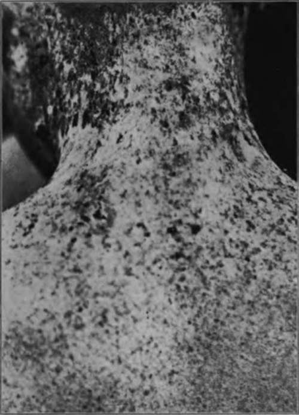

Xeroderma Pigmentosum
Description
This section is from the book "Skin Cancer", by Henry H. Hazen, A.B., M.D.. Also available from Amazon: Skin Cancer.
Xeroderma Pigmentosum
Unna's description of the clinical course of this disease still remains classical, and but little has been added. He states that this disease was first recognized by Ruder and by Kaposi.
Clinical Course
It usually begins with an inflammatory hyperemia and a freckle-like condition, the freckles doubtless being protective in intent. As a general rule, only the exposed parts of the skin are involved at first, but later in the course of the disease the whole skin may be involved. The first changes are noticed between the ages of five and ten months, and progress but slowly. At a little later date it is noted that there are atrophic areas in the skin, and also venous telangiectases (Fig. 6). Between the ages of fifteen and twenty years keratoses usually manifest themselves, and from the earliest stages the skin is remarkably rough and dry. The eyes are exceedingly sensitive to light, and the patient hangs his head and keeps the eyes closed when the illumination is at all bright. At about the age of twenty some of the keratotic patches become malignant, and the growth of these carcinomata is usually slow and typical of rodent ulcers. Occasionally the course of the disease is much more rapid; in the patient illustrated in Fig. 7 large cancers had developed at the age of fourteen.
Pathology
Histologically, the lesions have been studied by Unna, Kaposi,* Fordyce,* and others. The very earliest lesions have not as yet been sufficiently studied, but the second stage-that is, where there is a marked increase in the amount of pigment-is well known. The basal layer of the rete contains an abnormal amount of pigment, and the rete as a whole is thinned and atrophic. The papillae are widened by congestion. The changes in the corium are found over the entire skin. The varices do not form under the pigment, but only where this is lacking. Unna states that in the areas of excessive pigmentation the pigment is found not only in the rete, but also in the papillary spaces, partly in the lymph spaces and partly in the hypertrophic spindle cells. Scattered clumps are also found in the upper prickle layer.
*Kaposi: Twentieth Century Practice of Medicine, v. M Fordyce: Jour. Amer. Med. Assn., 1D10, lv, 1624.
Fig. 6.-This boy. aged 12, had suffered from freckles since he was 2 years old. Atrophic areas, areas of pigmentation, and a keratotic lesion upon his neck can be seen. The condition is one of xeroderma pigmentosum. (Case in the Johns Hopkins Hospital).
Ill the third stage there exists great thickening of the horny layer, so as to form horny warts or keratoses, beneath which the rete is deformed in spaces corresponding to the black areas. In the lower prickle layer the prickles are lost, and the cells consequently are misshapen, and there is considerable intracellular edema. In the rete are masses of closely packed epithelial cells loaded with pigment. At times collections of nevoid cells are found in the upper portion of the corium, all loaded with pigment. The white sclerotic-spots are due to an obliteration of the capillaries, caused by the sclerosis and hypertrophy of the connective tissue of the corium. There is usually some round-celled infiltration around the basal layer. The cancers developing in these patches are typical basal-celled carcinomata, showing, however, an increase in pigment.
Fig. 7.-The same pallent illustrated In Fig. 6. Had a number of well-developed cancers arising from the keratoses. Microscopically, they were shown to be basal-celled. The condition is xeroderma pigmentosum. (Case in the Johns Hopkins Hospital).
The condition is believed to be due to a congenital lack of resistance to the rays of the sun, and the increased pigmentation, as well as the early erythema, is an attempt on the part of the body to protect itself against the actinic rays. It is not unusual to find a number of children in the same family similarly affected with this disease.
Treatment
The prognosis is always bad, the patients may be relieved for a short time, but eventually death results from carcinomatosis of the Bkin, occasionally complicated by visceral metastases.
Treatment is unsatisfactory, and simply consists in delaying the fatal termination. The patients should be exposed to sunlight as little as possible, and it would be better if the windows of the room in which they are kept were of red glass, so as to filter out the actinic rays. In addition to this, the exposed portions of the body should either be covered by a mask or by a red ointment or lotion, calamine being fairly satisfactory for this purpose. Whenever a carcinoma appears, it should be radically removed at once, or, better yet, the keratoses should be excised as soon as they appear. In other respects the treatment is purely symptomatic, treating symptoms as they develop.
Continue to:
Tags
bookdome.com, books, online, free, old, antique, new, read, browse, download